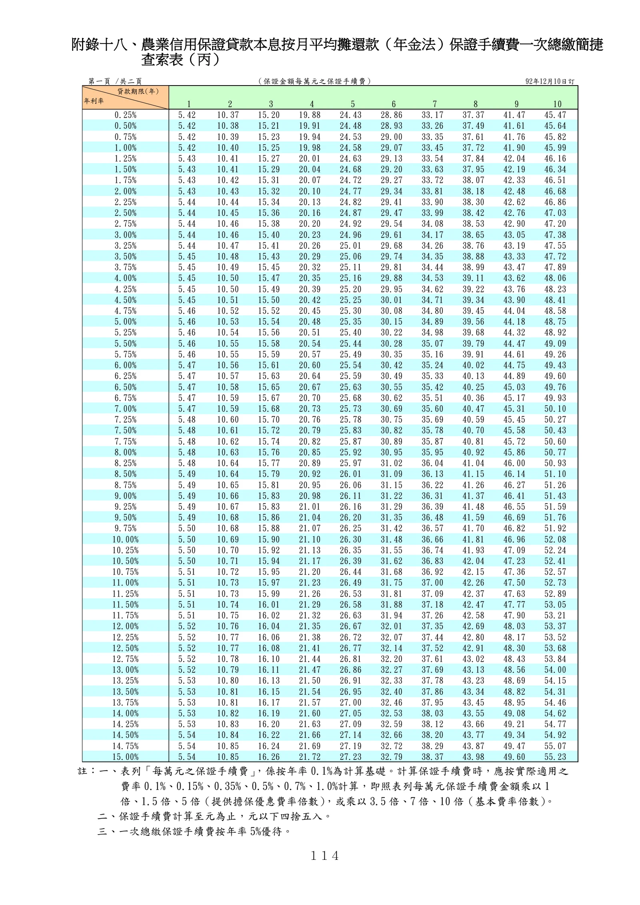

附錄十八、農業信用保證手續費一次總繳簡捷查索表
手冊頁：114 PDF頁：124／203

查看PDF文字層
下列文字取自PDF既有文字層，僅供搜尋、複製與無障礙輔助。複雜表格的欄列位置可能失真，正式內容請以原頁預覽或PDF為準。
附錄十八、農業信用保證貸款本息按月平均攤還款（年金法）保證手續費一次總繳簡捷 查索表（丙） 註：一、表列「每萬元之保證手續費」 ，係按年率0.1%為計算基礎。計算保證手續費時，應按實際適用之 費率 0.1%、0.15%、0.35%、0.5%、0.7%、1.0%計算，即照表列每萬元保證手續費金額乘以 1 倍、1.5 倍、5倍（提供擔保優惠費率倍數） ，或乘以3.5 倍、7 倍、10 倍（基本費率倍數） 。 二、保證手續費計算至元為止，元以下四捨五入。 三、一次總繳保證手續費按年率 5%優待。 第一頁 /共二頁 （保證金額每萬元之保證手續費） 92年12月10日訂 1 2 3 4 5 6 7 8 9 10 0.25% 5.42 10.37 15.20 19.88 24.43 28.86 33.17 37.37 41.47 45.47 0.50% 5.42 10.38 15.21 19.91 24.48 28.93 33.26 37.49 41.61 45.64 0.75% 5.42 10.39 15.23 19.94 24.53 29.00 33.35 37.61 41.76 45.82 1.00% 5.42 10.40 15.25 19.98 24.58 29.07 33.45 37.72 41.90 45.99 1.25% 5.43 10.41 15.27 20.01 24.63 29.13 33.54 37.84 42.04 46.16 1.50% 5.43 10.41 15.29 20.04 24.68 29.20 33.63 37.95 42.19 46.34 1.75% 5.43 10.42 15.31 20.07 24.72 29.27 33.72 38.07 42.33 46.51 2.00% 5.43 10.43 15.32 20.10 24.77 29.34 33.81 38.18 42.48 46.68 2.25% 5.44 10.44 15.34 20.13 24.82 29.41 33.90 38.30 42.62 46.86 2.50% 5.44 10.45 15.36 20.16 24.87 29.47 33.99 38.42 42.76 47.03 2.75% 5.44 10.46 15.38 20.20 24.92 29.54 34.08 38.53 42.90 47.20 3.00% 5.44 10.46 15.40 20.23 24.96 29.61 34.17 38.65 43.05 47.38 3.25% 5.44 10.47 15.41 20.26 25.01 29.68 34.26 38.76 43.19 47.55 3.50% 5.45 10.48 15.43 20.29 25.06 29.74 34.35 38.88 43.33 47.72 3.75% 5.45 10.49 15.45 20.32 25.11 29.81 34.44 38.99 43.47 47.89 4.00% 5.45 10.50 15.47 20.35 25.16 29.88 34.53 39.11 43.62 48.06 4.25% 5.45 10.50 15.49 20.39 25.20 29.95 34.62 39.22 43.76 48.23 4.50% 5.45 10.51 15.50 20.42 25.25 30.01 34.71 39.34 43.90 48.41 4.75% 5.46 10.52 15.52 20.45 25.30 30.08 34.80 39.45 44.04 48.58 5.00% 5.46 10.53 15.54 20.48 25.35 30.15 34.89 39.56 44.18 48.75 5.25% 5.46 10.54 15.56 20.51 25.40 30.22 34.98 39.68 44.32 48.92 5.50% 5.46 10.55 15.58 20.54 25.44 30.28 35.07 39.79 44.47 49.09 5.75% 5.46 10.55 15.59 20.57 25.49 30.35 35.16 39.91 44.61 49.26 6.00% 5.47 10.56 15.61 20.60 25.54 30.42 35.24 40.02 44.75 49.43 6.25% 5.47 10.57 15.63 20.64 25.59 30.49 35.33 40.13 44.89 49.60 6.50% 5.47 10.58 15.65 20.67 25.63 30.55 35.42 40.25 45.03 49.76 6.75% 5.47 10.59 15.67 20.70 25.68 30.62 35.51 40.36 45.17 49.93 7.00% 5.47 10.59 15.68 20.73 25.73 30.69 35.60 40.47 45.31 50.10 7.25% 5.48 10.60 15.70 20.76 25.78 30.75 35.69 40.59 45.45 50.27 7.50% 5.48 10.61 15.72 20.79 25.83 30.82 35.78 40.70 45.58 50.43 7.75% 5.48 10.62 15.74 20.82 25.87 30.89 35.87 40.81 45.72 50.60 8.00% 5.48 10.63 15.76 20.85 25.92 30.95 35.95 40.92 45.86 50.77 8.25% 5.48 10.64 15.77 20.89 25.97 31.02 36.04 41.04 46.00 50.93 8.50% 5.49 10.64 15.79 20.92 26.01 31.09 36.13 41.15 46.14 51.10 8.75% 5.49 10.65 15.81 20.95 26.06 31.15 36.22 41.26 46.27 51.26 9.00% 5.49 10.66 15.83 20.98 26.11 31.22 36.31 41.37 46.41 51.43 9.25% 5.49 10.67 15.83 21.01 26.16 31.29 36.39 41.48 46.55 51.59 9.50% 5.49 10.68 15.86 21.04 26.20 31.35 36.48 41.59 46.69 51.76 9.75% 5.50 10.68 15.88 21.07 26.25 31.42 36.57 41.70 46.82 51.92 10.00% 5.50 10.69 15.90 21.10 26.30 31.48 36.66 41.81 46.96 52.08 10.25% 5.50 10.70 15.92 21.13 26.35 31.55 36.74 41.93 47.09 52.24 10.50% 5.50 10.71 15.94 21.17 26.39 31.62 36.83 42.04 47.23 52.41 10.75% 5.51 10.72 15.95 21.20 26.44 31.68 36.92 42.15 47.36 52.57 11.00% 5.51 10.73 15.97 21.23 26.49 31.75 37.00 42.26 47.50 52.73 11.25% 5.51 10.73 15.99 21.26 26.53 31.81 37.09 42.37 47.63 52.89 11.50% 5.51 10.74 16.01 21.29 26.58 31.88 37.18 42.47 47.77 53.05 11.75% 5.51 10.75 16.02 21.32 26.63 31.94 37.26 42.58 47.90 53.21 12.00% 5.52 10.76 16.04 21.35 26.67 32.01 37.35 42.69 48.03 53.37 12.25% 5.52 10.77 16.06 21.38 26.72 32.07 37.44 42.80 48.17 53.52 12.50% 5.52 10.77 16.08 21.41 26.77 32.14 37.52 42.91 48.30 53.68 12.75% 5.52 10.78 16.10 21.44 26.81 32.20 37.61 43.02 48.43 53.84 13.00% 5.52 10.79 16.11 21.47 26.86 32.27 37.69 43.13 48.56 54.00 13.25% 5.53 10.80 16.13 21.50 26.91 32.33 37.78 43.23 48.69 54.15 13.50% 5.53 10.81 16.15 21.54 26.95 32.40 37.86 43.34 48.82 54.31 13.75% 5.53 10.81 16.17 21.57 27.00 32.46 37.95 43.45 48.95 54.46 14.00% 5.53 10.82 16.19 21.60 27.05 32.53 38.03 43.55 49.08 54.62 14.25% 5.53 10.83 16.20 21.63 27.09 32.59 38.12 43.66 49.21 54.77 14.50% 5.54 10.84 16.22 21.66 27.14 32.66 38.20 43.77 49.34 54.92 14.75% 5.54 10.85 16.24 21.69 27.19 32.72 38.29 43.87 49.47 55.07 15.00% 5.54 10.85 16.26 21.72 27.23 32.79 38.37 43.98 49.60 55.23 貸款期限(年) 年利率